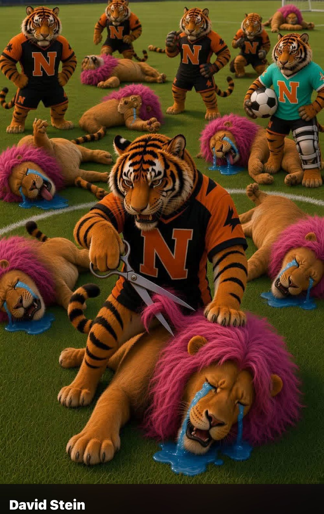
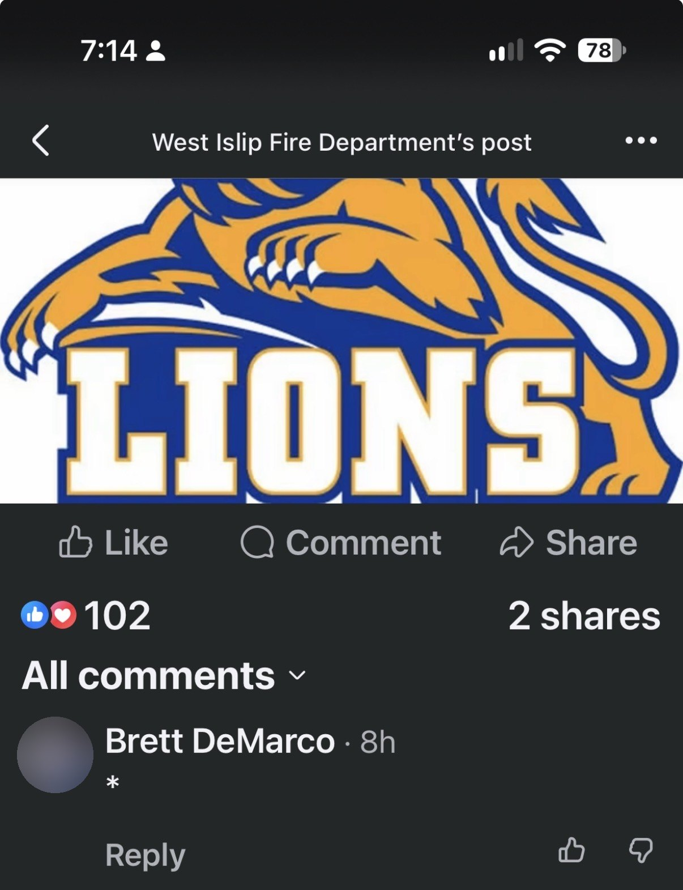
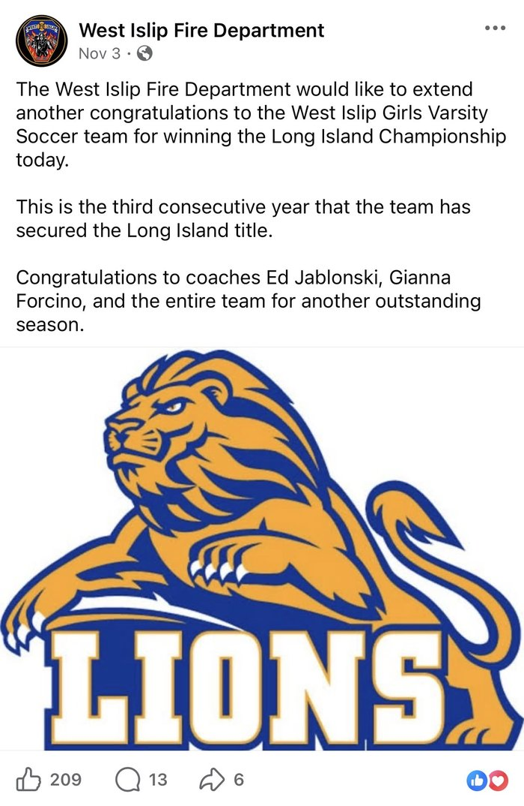

You go to AI to create a hateful image to hurt underage girls

West Islip Girls soccer is known as “WIGS” so you put a WIG on a Lion (West Islip Mascot) and cut their wig off and have it CRY
David Stein, is this how we act?
LET’S NOT FORGET ABOUT THIS CLASSLESS PARENT

This was viewed at 7:14am and this was posted 8 hours before that, so why are you making these classless comments at 11pm at night?

So you searched the internet to find out anything positive the West Islip girls soccer team did, beating the Garden City soccer team, and you put an asterisk because they got the opportunity to play again. So you are trying to hate on underage girls as a grown man.BRETT DEMARCO